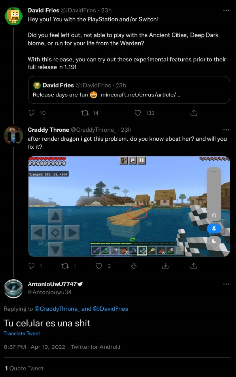
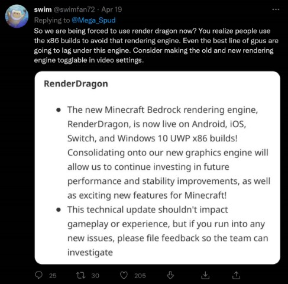
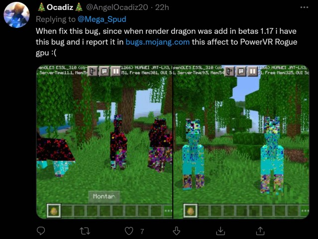
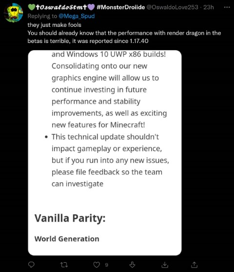
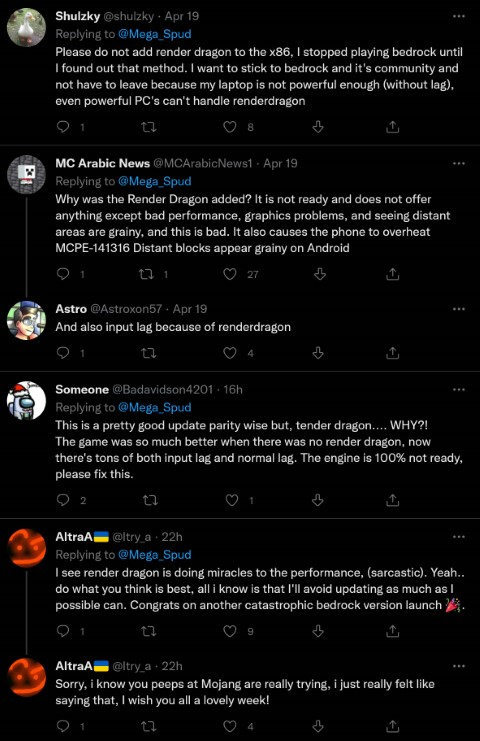

Minecraft 1.18.30 Update
Minecraft 1.18.30 marks the death of shaders on mobile, switch and PC x86.
Many people do not like render dragon ( the new rendering engine that all platforms now use ).

This will cause many arguments in Latin America!

Horses are buggy.

Pink glitch....

Doesn't impact gameplay experience?

Input lag...

RGB HORSE!!
Bedrock updates are always smooth.
They are right though, it does really half your framerate for some reason... also what's the point of this new engine, it just seems to cause more visual glitches and bugs. RTX isn't that needed, especially if 3rd party shaders could still be used...
Ah well I hope they fix it someday..
You could vote for these topics!